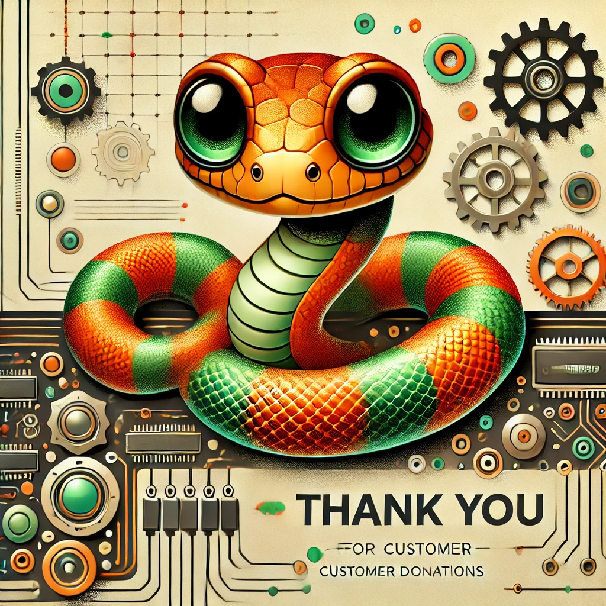

Support and encouragement
Your support is the lifeblood of our growth, sparking innovation and progress!
Scan the QR-code based on different currency to support us.


Your support is the lifeblood of our growth, sparking innovation and progress!
Scan the QR-code based on different currency to support us.
